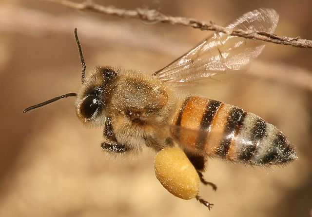
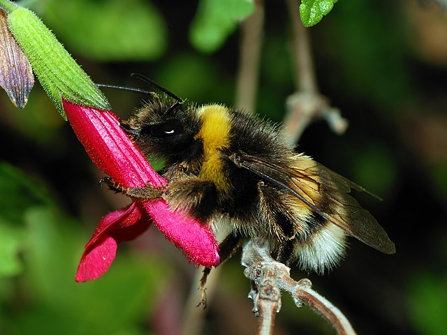
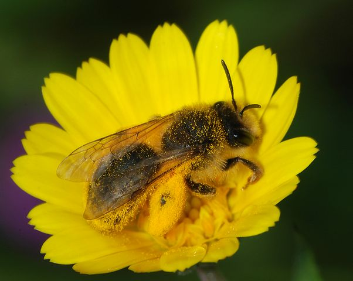
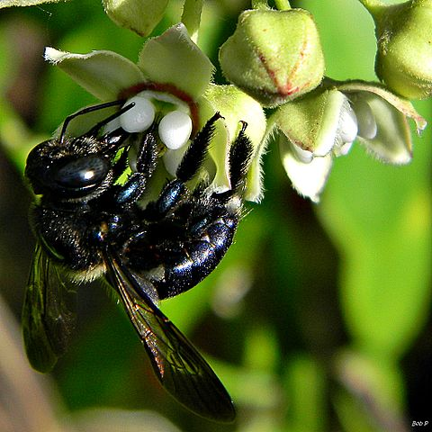

This quick guide will show you pictures of 4 different kinds of bees found in the world. Click the buttons to toggle the bee you want to see. This demonstrates how I learned to toggle images using JQuery.
Honey bees are known for their large colonies, their colonial nests made from wax and their production and storage of honey.
Source By Muhammad Mahdi Karim [GFDL 1.2 (http://www.gnu.org/licenses/old-licenses/fdl-1.2.html)], from Wikimedia Commons
Bumblebees gather and store nectar in their nests and gather pollen to feed their young.
Source By Alvesgaspar [GFDL (http://www.gnu.org/copyleft/fdl.html) or CC BY-SA 3.0 (https://creativecommons.org/licenses/by-sa/3.0)], from Wikimedia Commons
Mining bees build nests in underground tunnels and may live in communities with hundreds, or thousands, of tunnels.
Source By Alvesgaspar [GFDL (http://www.gnu.org/copyleft/fdl.html) or CC BY-SA 3.0 (https://creativecommons.org/licenses/by-sa/3.0)], from Wikimedia Commons
Carpenter bees bore into wood leaving circular holes to create tunnels. Carpenter bees are not social insects and instead build individual nests in trees or buildings.
Source By Bob Peterson from North Palm Beach, Florida, Planet Earth! [CC BY-SA 2.0 (https://creativecommons.org/licenses/by-sa/2.0)], via Wikimedia Commons
{kind=link}
{kind=link}
{kind=link}
_%E2%99%80_(7995162522).jpg){kind=link}